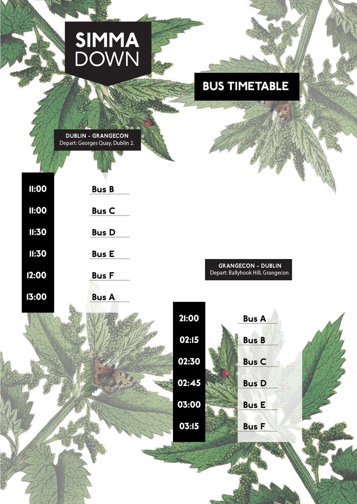
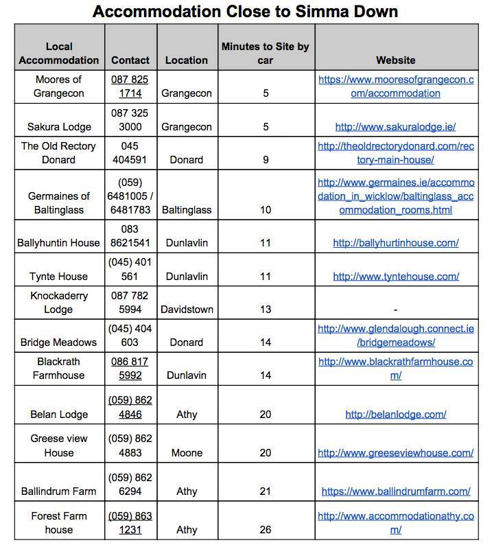

FAQ
-
Can I see a bus timetable?

-
Can you recommend any local accomodation?

-
What, when and where is Simma Down happening?
Simma Down is a one-day mini-festival taking place on Saturday 8th July near Grangecon in west Wicklow.
-
How much are tickets and where can I buy them?
Our first two ticket tiers are sold out. The final tier tickets are €65. All tickets include private bus transport between Dublin and the site and can be bought at this link: www.simmadown.eventbrite.ie
-
I want to bring my child, do they need a ticket?
Under 12s do not need a ticket for Simma Down but they must be accompanied by a guardian.
-
Can I buy my ticket at the gate?
No. Entrance to Simma Down will only be for ticket holders.
-
I am under the age of 18. Can I attend Simma Down?
Simma Down is an over-18s event requring valid ID. Under 12s may attend Simma down accompanied by your guardian at all times, and must leave the festival before 9pm.
-
How can I get to Simma Down?
Every ticket purchased comes with bus transport between Dublin city centre and Simma Down. There will also be parking facilities on-site for those of you who want to drive.
-
What times do the Simma Down buses leave Dublin?
The first buses leave Dublin at 11am Saturday morning and then every half hour until 1pm.
-
What time do the buses return to Dublin?
The first bus departing the Simma Down site will be at 9pm Saturday evening. The others will leave between 2 and 3am, every 15 minutes.
-
Where in Dublin do I get picked up and dropped off from?
Buses will pick you up from George's Quay, Dublin 2, and drop you back to exactly the same spot.
-
Can I drive to Simma Down?
Yes, there will be parking facilities at Simma Down, although we advise you take our buses so you can fully enjoy the party and cut down on car emissions. We also encourage carpooling!
-
Can I camp at Simma Down?
No, Simma Down is a non-camping festival.
-
Can I bring a campervan?
You can drive to Simma Down in your campervan but you won’t be able to stay overnight in it.
-
What time does Simma Down begin and end?
Simma Down opens at 12 noon and music will finish at 2am.
-
Can I buy food there?
Yes. There will be a variety of locally produced food on sale with sweet, savoury, meaty, vegetarian and vegan options.
-
What else can I buy there?
Simma Down will host a mini-market where you’ll be able to buy variety of wonderful clothes, accessories and other products.
-
Can I buy alcohol there?
Yes. Simma Down is also a BYOB event. However, please be aware no glass is allowed on-site. We will have plastic containers ready for you as you enter the festival but minimising the amount of glass you bring with you would be much appreciated. Consumption of alcohol by under-18s is not tolerated.
-
Is Simma Down Wheelchair accessible?
Yes. All music venues and food stalls will be wheelchair accessible, however, the workshop/talk area unfortunately won’t be. There will be disabled toilets on-site. We will be working to make all areas fully accessible next year and apologise for any inconvenience this year.
-
Will there be an ATM or card machines at Simma Down?
No. All traders will be cash only.
-
Can I bring pets?
Unfortunately not. Sorry!
-
You haven’t answered my question!
If you have any further queries, don’t hesitate to contact us at simsimmadublin@gmail.com .